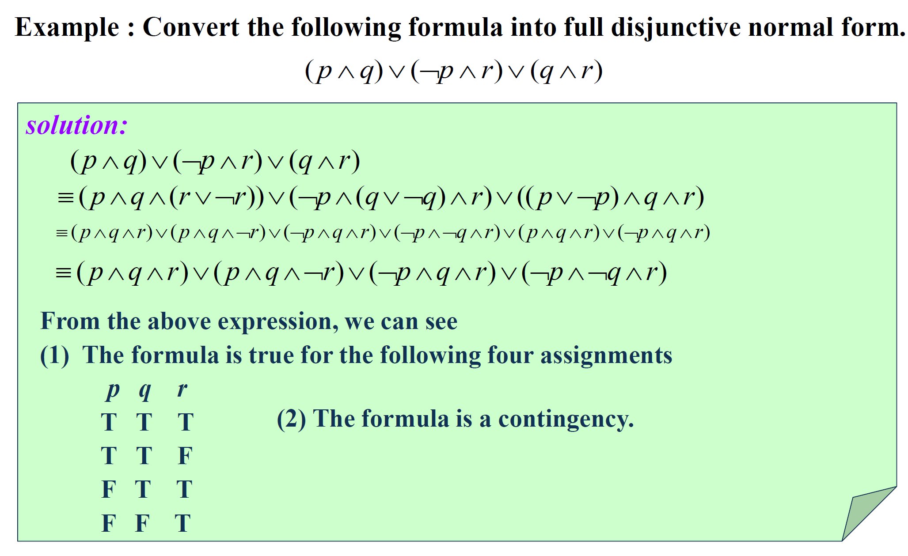
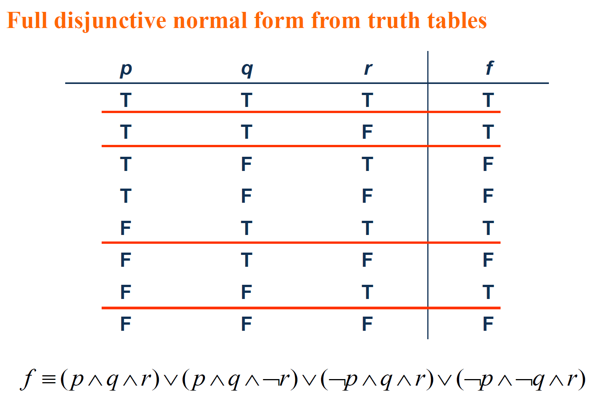
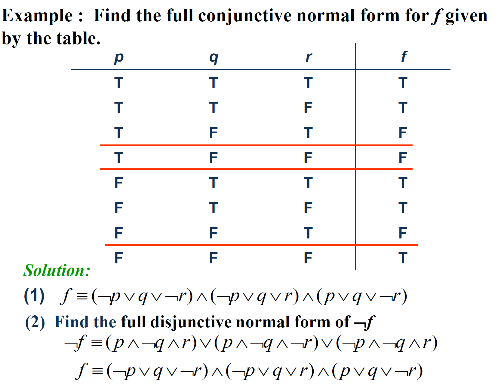

Part 03
Normal Forms
Propositional Normal Forms 命题范式
A literal is a variable or its negation.
变量及其否定统称为文字，如 $p$ 和 $\neg p$
Disjunctions (conjunctions) with one or more literals as disjuncts (conjuncts) are called disjunctive (conjunctive) clauses.
由一个或多个文字所构成的析取（合取）式称作 析取（合取）子句
Two Normal Forms 两类基本范式
Disjunctive Normal Form 析取范式 DNF
A formula is said to be in disjunctive normal form if it is written as a disjunction, in which all the terms are conjunctions of literals.
由有限个简单析取式的合取构成的命题公式称为析取范式，形如 $(p\land q)\lor(p\and q)$
Conjunctive Normal Form 合取范式 CNF
A compound proposition is in Conjunctive Normal Form (CNF) if it is a conjunction of disjunctions.
由有限个简单合取式的析取构成的命题公式称为合取范式，形如 $(p \lor q) \land (p \lor q)$
Identify Normal Forms 判定范式
| p | DNF & CNF |
|---|---|
| ¬p ∨ q | DNF & CNF |
| ¬p ∧ q ∧ ¬r | DNF & CNF |
| ¬p ∨ (q ∧ ¬r) | DNF |
| ¬p ∧ (q ∨ ¬r) ∧ (¬q ∨ r) | CNF |
The trick lies in that in some cases, clauses can be seen as a whole, and as a DNF or CNF.
How to Obtain Normal Form 产生范式的方法
Faced with → & ↔
p → q ≡ ¬p ∨ q
p ↔ q ≡ (p → q) ∧ (q → p)
Faced with ¬
$\neg(p_1\wedge p_2\wedge...\wedge p_n)\equiv\neg p_1\vee\neg p_2\vee...\vee\neg p_n$
¬¬p ≡ p
Use of the commutative laws, the distributive laws and the associative laws to obtain normal form

Full Disjunctive(Conjunctive) Normal Form 主析取（合取）范式
Minterm and Maxterm 极小项、极大项
A minterm is a conjunctive of literals in which each variable is represented exactly once.
A maxterm is a disjunctive of literals in which each variable is represented exactly once.
在含有n个命题变量的简单合取式（简单析取式）中，若每个命题变量和它的否定恰好出现一个且仅出现一次，而且命题变量或它的否定式按下标从小到大或按字典序排列，称这样的简单合取式（简单析取式）为极小项（极大项）
Full Disjunctive(Conjunctive) Normal Form 主析取（合取）范式
If a formula is expressed as a disjunction of minterms, it is said to be in full disjunctive normal form.
If a formula is expressed as a conjunctive of maxterms, it is said to be in full conjunctive normal form.
所有简单合取式（简单析取式）都是极小项（极大项）的析取范式（合取范式）称为主析取范式（主合取范式）
[Important!] the Association Between Normal Forms and Truth Table （重点！）范式与真值表的关系
DNF & Truth Table


The reason why this works:
- Each minterm is true for exactly one assignment.
- If A and B are two distinct minterms, then A ∧ B ≡ F.
- A disjunction of minterms is true only if at least one of its constituents minterms is true.
CNF & Truth Table

Prenex Normal Form 前束范式
Why we need it?
- simplifies the surface structure of the sentence
- useful to automated theorem proving
$Q_1x_1Q_2x_2...Q_nx_nB$
$Q_i(i = 1,2,...,n)$ is ∀ or ∃ and the formula B is quantifier free
Any expression can be converted into prenex normal form.
How to obtain prenex normal form?
- Eliminate all occurrences of → and ↔ from the formula in question.
- Move all negations inward such that, in the end, negation only appear as part of literals.
- Standardize the variables apart(when necessary).
- The prenex normal form can now be obtained by moving all quantifiers to the front of the formula.
e.g.